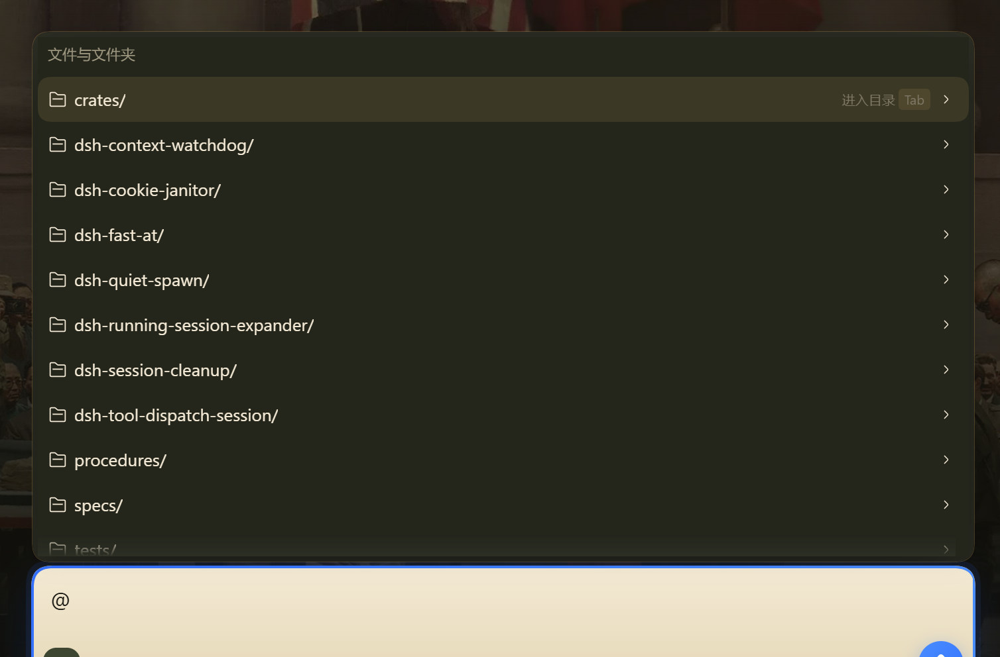

@ 从按下到出结果：完整流程图
数据来自本轮实测（2026-11-24，5 轮，headless Edge + 已登录 cookie，viewport 1600×1000）· 时间基准 = keydown(@) 触发时刻
先看结论。 总耗时拆成两段，瓶颈完全不同：
· 骨架（菜单外壳出现）：110ms —— Draft.js 选区恢复 + React 渲染
· 候选行（真正看见内容）：冷态 1848ms / 热态 271ms —— 主因是 DSH 原生 api/fileReferences/list 服务端要 1.5–2.3 秒
· 我们插件自己的 /fast-at/api/sessions.list 只要 127ms，不是瓶颈
一、总览：一次 @ 击键的四个阶段
0按键进入编辑器~1ms
keydown → beforeinput → Draft.js 更新 EditorState。实测 keydown 到 beforeinput 只差 1–2ms，字符写入本身不慢。
↓
1菜单骨架挂载110ms（93–144）
检测到 @ → refreshHeaders → fetchCandidates → React 提交 → .pc3rQa_menu 出现。
97.6% 的时间在 Draft.js 的 jr()（setSelection）→ 一次击键 137 次 getBoundingClientRect 同步布局。此时菜单里一个候选行都没有，只有「主机」这类分组标题。
↓ 请求并发发出
2候选行真正出现冷 1848ms / 热 271ms
三条请求并发，
最慢的那条决定行何时出现：
| 请求 | 耗时 | 结果 |
|---|
api/fileReferences/list（DSH 原生） | 1487–2340ms | 响应仅 684 字节，慢在服务端 |
/fast-at/api/sessions.list（我们插件） | 118–161ms | 本地索引，正常 |
ds-harness-remote/settings.get | 1658–2393ms | 同样慢，热态会命中缓存 |
↓
3回车选中 → 结果落到编辑器~10ms
编码 mention：@[标题](dsh-session:base64)，插入编辑器。实测编辑器内容 crates/，一步到位无卡顿。
二、截图对照
A · 空态
还没打 @，输入框干净
B · 110ms：骨架出现
只有「主机」标题，0 个候选行
← 上一轮我在这里误判成「已经出来了」

C · 1848ms（冷）：62 行全就位
文件与文件夹 + 对话两个分组
← 用户真正看到内容的时刻
D · 结果
编辑器里插入 crates/
三、耗时分布
候选行出现的时刻（5 轮实测）
| 轮次 | 骨架 | 候选行 | fileReferences | fast-at |
|---|
| 1 | 93ms | 1848ms | 1564ms | 157ms |
| 2 | 125ms | 271ms | 未触发（缓存） | 118ms |
| 3 | 110ms | 1754ms | 1487ms | 127ms |
| 4 | 101ms | 267ms | 未触发（缓存） | 121ms |
| 5 | 144ms | 2675ms | 2340ms | 161ms |
| 中位 | 110ms | 冷 1848 / 热 271 | 1564ms | 127ms |
1.5 秒花在哪：服务端，不是传输
POST /api/fileReferences/list 请求体：{"args":{"agentId":"session-fb0b...","query":""}}
响应 684 字节，但耗时 1556ms / 1603ms（两次独立测量）。
这是服务端固定开销，与返回数据量无关。
一次击键里 137 次 getBoundingClientRect 的归属
Draft.js jr() / UH hook 的 c()
97.6%
四、两条瓶颈的关系
| 瓶颈 | 位置 | 症状 | 改哪里 |
|---|
| 骨架 110ms | UH 的 c() + Draft.js jr() | 按下 @ 后 100ms 左右才有反应，主线程被占满 | 改 DSH 核心：c() 改用 ResizeObserver；或菜单打开时跳过 selection 恢复 |
| 候选行 1.8s | api/fileReferences/list 服务端 | 菜单开了但空着 1.5–2 秒，用户以为没反应 | 我们插件可以接管这一路：像拦 candidates 一样拦文件候选，用本地索引 |
这改变了优化优先级。之前把注意力全放在 getBoundingClientRect 上，只覆盖「骨架」那 110ms。用户感知的「卡顿不流畅」，很大一部分其实是菜单空着等 1.8 秒。接管 fileReferences 的收益远大于优化布局读取。
五、下一步建议（按收益排序）
| 优先级 | 做什么 | 预期收益 | 风险 |
|---|
| P0 | 插件接管 fileReferences/list，用本地文件索引 | 冷态 1848ms → 预计 < 300ms | 中：要复刻文件列表的递归与过滤逻辑 |
| P1 | 排查 fileReferences/list 服务端为什么空 query 都要 1.5s | 可能根因只是缺一个索引 | 低：先取证 |
| P2 | 骨架 110ms：c() 改 Observer | 110ms → 预计 20ms | 高：改 DSH 核心 |
数据采集：headless Edge + 导出的登录 cookie + 页面内 Performance API / MutationObserver / fetch 打点
完整排查过程见 TROUBLESHOOTING-LOG.md，原始数据见 PERF-REPORT-2026-11-24.md